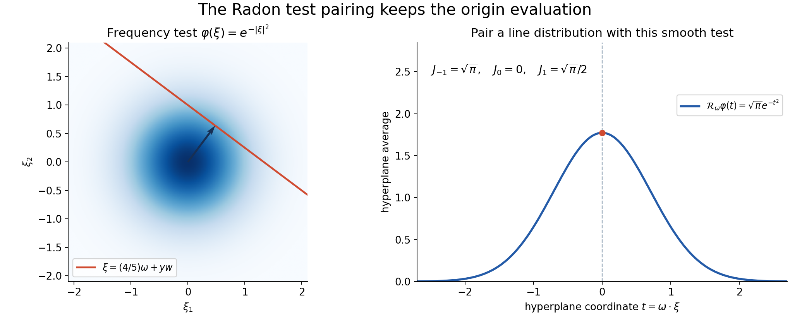
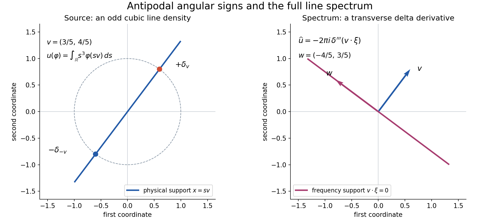

Angular distributions and their full Fourier transforms
Written by GPT-6.1 Sol (OpenAI), October 2026. Self-checked by the writing AI. Public domain (CC0).
An angular Fourier formula is useful only if its integral has a precise meaning. An angular distribution cannot be multiplied pointwise by a delta distribution. Instead, test the frequency variable first. The resulting hyperplane average is a smooth function of direction, so the angular distribution can act on it.
Basic references are Homogeneous extensions and angular moments, Finite parts of singular powers, Complex powers at a boundary, and Schwartz functions and Fourier inversion. Their exact extension, finite-part and Fourier proofs are the prerequisites. The complete proof proves the remaining hyperplane-average argument and the identity on all Schwartz tests.
1. Two radial directions determine the constant
Suppose \(u\) is a tempered distribution in \(n\) variables, homogeneous of degree \(-n-k\), where \(k\) is any integer. Assume
\[ u(-x)=(-1)^{k+1}u(x). \tag{1} \]Write \(T\) for its angular distribution on the unit sphere. For ordinary homogeneous functions, \(T\) is integration against the restriction of \(u\), with the usual Euclidean surface measure.
The extension theorem fixes the value at the origin:
\[ \langle u,\psi\rangle =\frac12T\left(\omega\longmapsto \langle P_k(r),\psi(r\omega)\rangle\right), \qquad P_k= \begin{cases} \operatorname{pf}(r^{-k-1}),&k\geq0,\\ r^{-k-1},&k<0. \end{cases} \tag{2} \]The radial line runs in both directions. The negative half has one parity sign from \(P_k\) and the same sign from \(T\). They cancel. Thus the full line counts every positive radial contribution twice, and (2) must contain \(1/2\).
With \(\widehat\phi(\xi)=\int e^{-ix\cdot\xi}\phi(x)\,dx\), the normalized line transform is
\[ \widehat P_k=2\pi i^{-1-k}\sigma_k,\qquad \sigma_k(t)= \begin{cases} \dfrac{\operatorname{sgn}(t)t^k}{2k!},&k\geq0,\\ \delta_0^{(-k-1)}(t),&k<0. \end{cases} \tag{3} \]Combining the radial half with the line constant \(2\pi\) gives the sphere constant \(\pi\).
2. Test frequency before pairing direction
For a Schwartz test \(\phi\), its hyperplane average is
\[ \mathcal R_\omega\phi(t) =\int_{\omega^\perp}\phi(t\omega+y)\,dy . \tag{4} \]All its derivatives in \(t\) and \(\omega\) decrease rapidly in \(t\). Indeed, angular differentiation adds only finitely many powers of \(|y|+|t|\), and the Schwartz decay absorbs them. The complete proof gives the uniform estimates.
Consequently
\[ J_{k,\phi}(\omega)= \langle\sigma_k,\mathcal R_\omega\phi\rangle \tag{5} \]is a smooth sphere function. The full angular transform is
\[ \boxed{\ \langle\widehat u,\phi\rangle =\pi i^{-1-k}T(J_{k,\phi})\ }. \tag{6} \]This defines a distribution on the entire frequency space. In the abbreviated integral notation,
\[ \widehat u(\xi)=\pi i^{-1-k} \int_{S^{n-1}}u(\omega)\sigma_k(\omega\cdot\xi)\,dS(\omega). \tag{7} \]Equation (6) specifies exactly what (7) means.
The reason is the Fourier slice identity
\[ \widehat{\mathcal R_\omega\phi}(r)=\widehat\phi(r\omega). \tag{8} \]Substitute (8) into (2), apply the one-dimensional transpose in (3), and obtain (6). Every singular radial pairing is against a line Schwartz test; every angular pairing is against a smooth sphere test.

Figure 1. For the frequency test \(e^{-|\xi|^2}\) in dimension two, every unit direction has hyperplane average \(\sqrt{\pi}e^{-t^2}\). The illustrated slice has \(\omega=(3/5,4/5)\) and \(t=4/5\). Pairing with \(\sigma_{-1},\sigma_0,\sigma_1\) gives \(\sqrt{\pi},0,\sqrt{\pi}/2\), respectively. The source and exact coordinate description are included. See complete-proof Lemma 3.1 and Solution 3.
For \(k<0\), (5) is the derivative
\[ J_{k,\phi}(\omega) =(-1)^{-k-1} \partial_t^{-k-1}\mathcal R_\omega\phi(0). \tag{9} \]Those evaluations retain the delta derivatives in frequency. They cannot be recovered by looking only at nonzero frequency points.
3. Four worked examples
Example 1: an odd principal value.
In dimension one, let \(u=\operatorname{pv}(1/x)\). Its degree is \(-1\), so \(k=0\), and its parity is odd. The angular values on \(S^0=\{-1,1\}\) are \(T=\delta_1-\delta_{-1}\). In (7),
\[ \int_{S^0}u(\omega)\sigma_0(\omega\xi)\,dS(\omega) =\frac12\operatorname{sgn}\xi -\frac12\operatorname{sgn}(-\xi) =\operatorname{sgn}\xi . \]Since \(i^{-1}=-i\), the full transform is \(-i\pi\operatorname{sgn}\xi\). There is no additional point term.
Example 2: an even finite part.
Let \(u=\operatorname{pf}(1/x^2)=-\partial_x\operatorname{pv}(1/x)\). Here \(k=1\) and \(T=\delta_1+\delta_{-1}\). Because \(\sigma_1(t)=|t|/2\), the angular sum is \(|\xi|\). The phase \(i^{-2}=-1\) gives
\[ \widehat u=-\pi|\xi|. \]Its Gaussian pairing is \(-\pi/b\) on \(e^{-b\xi^2}\), \(b>0\), because \(\int_{\mathbb R}|\xi|e^{-b\xi^2}\,d\xi=1/b\).
Example 3: a line source and a frequency point derivative.
In \(\mathbb R^2\), take \(u=x_1^2\delta_0(x_2)\), meaning
\[ u(\psi)=\int_{\mathbb R}s^2\psi(s,0)\,ds . \]Its degree is \(1\), so \(k=-3\), and \(T=\delta_{e_1}+\delta_{-e_1}\). In (7), \(\sigma_{-3}=\delta_0''\); the two antipodal contributions are equal. Thus
\[ \widehat u=-2\pi\delta_0''(\xi_1), \]with the constant distribution in the transverse variable \(\xi_2\). On \(\phi(\xi)=e^{-a\xi_1^2-b\xi_2^2}\), \(a,b>0\), this gives \(4\pi a\sqrt{\pi/b}\). Its support is the line \(\xi_1=0\), including the frequency origin.

Figure 2. The support diagram shows the tilted cubic source of Exercise 4: \(u(\psi)=\int_{\mathbb R}s^3\psi(sv)\,ds\), \(v=(3/5,4/5)\), with angular distribution \(\delta_v-\delta_{-v}\). Its whole spectrum is \(-2\pi i\delta_0'''(v\cdot\xi)\), with constant transverse coordinate \(w=(-4/5,3/5)\), and support \(v\cdot\xi=0\). The plotted lines show supports; the formulas specify the distributional amplitudes. See complete-proof Theorem 4.1 and Solution 4.
Example 4: a radial source in three dimensions.
For \(u(x)=|x|^{-2}\), the degree is \(-2\), hence \(k=-1\). Its angular density is one and \(\sigma_{-1}=\delta_0\). Rotate \(\xi\ne0\) to the third axis and use the sphere latitude measure \(dS=d\theta\,ds\), \(s=\omega_3\). Then
\[ \int_{S^2}\delta_0(\omega\cdot\xi)\,dS(\omega) =\int_0^{2\pi}\int_{-1}^1\delta_0(|\xi|s)\,ds\,d\theta =\frac{2\pi}{|\xi|}. \]Therefore \(\widehat u=2\pi^2/|\xi|\). Both sides are whole distributions: the physical \(r^{-2}\) and frequency \(r^{-1}\) are locally integrable in dimension three. In the latter degree there is no homogeneous point-supported ambiguity. On \(e^{-b|\xi|^2}\), the transform has value \(4\pi^3/b\).
4. Exercises, 100 points
- The radial half, 10 points. In dimension one, compute (7) for \(u=1\). Give its degree, \(k\), angular distribution and full Fourier transform. Explain the error caused by removing \(1/2\) from the radial formula.
- A third-order finite part, 12 points. Find the full transform of \(u=\operatorname{pf}(1/x^3)\). Evaluate it on \(\phi(\xi)=\xi e^{-b\xi^2}\), \(b>0\), including its complex phase.
- Three Gaussian tests, 12 points. For \(\phi(\xi)=e^{-b|\xi|^2}\) in dimension \(n\), derive \(\mathcal R_\omega\phi(t)\). Compute \(J_{k,\phi}\) and \(\widehat u(\phi)\) for \(k=-1,0,1\), with arbitrary angular \(T\) of the required parity. Retain \(T(1)\) where appropriate.
- A tilted odd line source, 14 points. Let \(v=(3/5,4/5)\) and define \(u(\psi)=\int_{\mathbb R}s^3\psi(sv)\,ds\). Compute its angular distribution, degree, exponent \(k\), full transform, support and exact action on a Schwartz test by a hyperplane-average derivative.
- Why parity is required, 12 points. Use the origin delta in dimension one to disprove the same theorem with no parity hypothesis. Then describe all degree-\(-1\) homogeneous extensions of the punctured function \(1/x\), and explain why odd parity selects one.
- Continuous dependence on angular data, 12 points. Let \(T_j\) and \(T\) have the required parity for a fixed \(k\). Prove that weak convergence on smooth sphere tests implies weak convergence of both \(u_j\) and \(\widehat u_j\) on Schwartz tests. Prove the corresponding assertion for strong convergence, with the strong topologies stated explicitly.
- Radial kernels in every dimension, 14 points. For \(n\geq2\), compute the whole transform of \(u(x)=|x|^{1-n}\), expressing the constant using the area of \(S^{n-2}\). Give the constants in dimensions two, three and four. Explain why equality away from zero in this example determines the whole transform.
- Degree, parity and contact terms, 14 points. Derive the Fourier scaling identity directly from tests and show that the transform in (6) has degree \(k\) and parity \((-1)^{k+1}\). For \(k\geq0\), identify the only possible point-supported ambiguity of a degree-\(-n-k\) physical extension and show why (1) eliminates it. For \(k<0\), explain how point terms can nevertheless occur in frequency.
5. Complete solutions
Solution 1
The constant function has degree zero. With \(n=1\), \(-1-k=0\) gives \(k=-1\), and its parity is even, as required. Both sphere values are one, so \(T=\delta_1+\delta_{-1}\). The kernel is \(\sigma_{-1}=\delta_0\) and the phase is \(i^0=1\). Reflection of a delta is unchanged, so the angular sum is \(2\delta_0(\xi)\). Equation (7) gives
\[ \widehat1=2\pi\delta_0. \]This agrees with the transposed one-dimensional inversion theorem. Removing \(1/2\) from (2) doubles the physical distribution before transformation, hence would incorrectly give \(4\pi\delta_0\). The two points of \(S^0\) each have measure one; no normalized probability sphere measure is being used.
Solution 2
Its degree is \(-3\), so \(k=2\), and its parity is odd. Its angular distribution is \(\delta_1-\delta_{-1}\). Since \(\sigma_2(t)=\operatorname{sgn}(t)t^2/4\), the signed antipodal sum is \(\operatorname{sgn}(\xi)\xi^2/2\). The phase \(i^{-3}=i\) gives
\[ \widehat{\operatorname{pf}(1/x^3)} =\frac{i\pi}{2}\xi^2\operatorname{sgn}\xi . \]The derivative normalization gives the same answer: \(\operatorname{pf}(1/x^3)=\frac12\partial_x^2\operatorname{pv}(1/x)\), so its transform is \(\frac12(i\xi)^2(-i\pi\operatorname{sgn}\xi)\).
Pairing with \(\xi e^{-b\xi^2}\) gives
\[ \frac{i\pi}{2}\int_{\mathbb R}|\xi|^3e^{-b\xi^2}\,d\xi =\frac{i\pi}{2b^2}. \]For the integral, use twice the positive half-line and put \(s=b\xi^2\): \(\int_0^\infty \xi^3e^{-b\xi^2}\,d\xi=(2b^2)^{-1}\int_0^\infty se^{-s}\,ds=(2b^2)^{-1}\). Integration by parts gives the last integral one. This retains both the positive imaginary phase and the factorial \(2!\).
Solution 3
An orthogonal frame writes \(|t\omega+y|^2=t^2+|y|^2\). The exact Gaussian mass in F, Section 3, and Fubini give
\[ \mathcal R_\omega\phi(t) =A_b e^{-bt^2},\qquad A_b=(\pi/b)^{(n-1)/2}. \]For \(n=1\), the exponent is zero and this also gives the two line restrictions correctly.
For \(k=-1\), evaluate at zero: \(J_{-1,\phi}=A_b\), and (6) gives \(\widehat u(\phi)=\pi A_bT(1)\).
For \(k=0\), \(\sigma_0=\operatorname{sgn}(t)/2\) is odd and the Gaussian is even, so its absolutely convergent pairing is zero. Thus \(J_{0,\phi}=0\) and \(\widehat u(\phi)=0\), even before applying \(T\).
For \(k=1\), \(\sigma_1=|t|/2\). The substitution \(s=bt^2\) gives \(\int_{\mathbb R}|t|e^{-bt^2}\,dt=1/b\). Hence \(J_{1,\phi}=A_b/(2b)\). The phase \(i^{-2}=-1\) gives
\[ \widehat u(\phi)=-\frac{\pi A_b}{2b}T(1). \]The allowed angular data in this case are even; that condition does not force \(T(1)\) to vanish.
Solution 4
Put \(w=(-4/5,3/5)\); the matrix with columns \(v,w\) is orthogonal with determinant one. The angular distribution is \(T=\delta_v-\delta_{-v}\): on positive radii its first point gives \(s^3\psi(sv)\), and its negative point gives the negative signed half-line. The source degree is \(3-1=2\), because one integration variable contributes one inverse power under dilation. Thus \(-2-k=2\), giving \(k=-4\), whose required parity is odd.
Here \(\sigma_{-4}=\delta_0'''\) and \(i^{-1-k}=i^3=-i\). As a distribution, reflection of the scalar argument gives \(\delta_0'''(-t)=-\delta_0'''(t)\). The angular difference therefore gives \(2\delta_0'''(v\cdot\xi)\). The full transform is
\[ \widehat u=-2\pi i\,\delta_0'''(v\cdot\xi). \]In the coordinates \(\xi=tv+aw\), this is the third delta derivative in \(t\), tensored with the constant distribution in \(a\). It has support \(v\cdot\xi=0\), the line spanned by \(w\); no frequency points on that line are removed.
For \(\phi\in\mathcal S(\mathbb R^2)\), define
\[ R_v\phi(t)=\int_{\mathbb R}\phi(tv+aw)\,da . \]The test action is
\[ \widehat u(\phi) =-2\pi i\,(-1)^3(R_v\phi)'''(0) =2\pi i\,(R_v\phi)'''(0). \]Its derivative exists and is an absolutely convergent integral of the third directional derivative, by the estimates in the complete proof. The determinant one leaves both measures and the coefficient unchanged.
Solution 5
The distribution \(\delta_0\) has degree \(-1\) in dimension one: \(D_t\delta_0=t^{-1}\delta_0\). Its punctured restriction is zero, so its angular distribution is zero. With no parity requirement, \(k=0\) would fit its degree and the proposed right side would be zero, whereas \(\widehat{\delta_0}=1\). This is a whole-distribution counterexample.
Any two homogeneous degree-\(-1\) extensions of \(1/x\) differ by a distribution supported at zero. The point-jet theorem writes that difference as a finite sum of delta derivatives; degree \(-1\) leaves only a multiple of \(\delta_0\). Thus all such extensions are
\[ \operatorname{pv}\frac1x+c\delta_0 . \]The principal value is odd and \(\delta_0\) is even. Odd parity therefore forces \(c=0\). Their transforms without parity would differ by the constant \(c\), which is also invisible to the punctured angular data.
Solution 6
Weak convergence on the sphere means \(T_j(h)\to T(h)\) for every smooth sphere function \(h\). For a fixed Schwartz \(\psi\), the radial pairing in (2) is one smooth sphere function, by Proposition 1.1 of the complete proof. Applying weak convergence gives \(u_j(\psi)\to u(\psi)\). For a fixed Schwartz \(\phi\), (5) is another smooth sphere function; (6) gives \(\widehat u_j(\phi)\to\widehat u(\phi)\).
For the strong sphere dual topology, convergence means uniform convergence on every bounded subset of \(C^\infty(S^{n-1})\). A subset is bounded when each sphere derivative seminorm is bounded on it. Strong convergence in \(\mathcal S'\) means uniform convergence on every Schwartz-test subset bounded in all Schwartz seminorms.
If \(B\subset\mathcal S\) is bounded, the radial estimates (7) in the complete proof make the sphere tests in (2), for \(\psi\in B\), a bounded smooth sphere set. Strong convergence of \(T_j-T\) is uniform on that image, so \(u_j-u\) converges uniformly on \(B\). The Radon estimates give the same assertion for the image \(\{J_{k,\phi}:\phi\in B\}\); (6) gives uniform convergence of \(\widehat u_j-\widehat u\). This proves the strong assertion directly. It does not identify this topology with a topology having a fixed wavefront bound.
Solution 7
The degree is \(1-n=-n-(-1)\), so \(k=-1\). The parity is even, the angular density is one, and the multiplier in (7) is \(\pi\). For \(\xi\ne0\), rotate to \(\xi=|\xi|e_n\). Write \(s=\omega_n\). The sphere latitude formula gives
\[ dS=(1-s^2)^{(n-3)/2}\,ds\,dS_{n-2}. \]For \(n=2\), \(S^0\) has its two-point counting measure, so this formula includes both semicircles. The delta sets \(s=0\), where the weight is one, and its scalar substitution gives
\[ \int_{S^{n-1}}\delta_0(\omega\cdot\xi)\,dS =\frac{|S^{n-2}|}{|\xi|}. \]Thus
\[ \widehat{|x|^{1-n}} =\frac{\pi|S^{n-2}|}{|\xi|}. \]The sphere areas \(2,2\pi,4\pi\) in dimensions zero, one and two give constants \(2\pi,2\pi^2,4\pi^2\) for \(n=2,3,4\), respectively.
The physical radial density is locally integrable: its polar exponent is \((1-n)+(n-1)=0\). The proposed frequency density \(r^{-1}\) is also locally integrable for \(n\geq2\), since its polar exponent is \(n-2\). Both define homogeneous tempered distributions; the frequency degree is \(-1\). Their difference, after the calculation away from zero, is a homogeneous point-supported distribution of degree \(-1\). A point jet in dimension \(n\) has degree \(-n-j\) for \(j\geq0\), which cannot be \(-1\) for \(n\geq2\). The point-jet theorem therefore makes the difference zero. This supplies the whole equality, not just its punctured version.
Solution 8
In the Fourier integral, substitute \(\xi=t\eta\) to obtain \(\widehat\phi(x/t)=t^n\widehat{(\phi(t\,\cdot))}(x)\). The definitions then give
\[ \mathcal F(D_tu)(\phi) =t^{-n}u(\widehat\phi(\,\cdot/t)) =\widehat u(\phi(t\,\cdot)) =t^{-n}D_{1/t}\widehat u(\phi). \]If \(D_tu=t^{-n-k}u\), then \(D_{1/t}\widehat u=t^{-k}\widehat u\). Set \(s=1/t\) to obtain \(D_s\widehat u=s^k\widehat u\). Reflection commutes with Fourier transformation by the same change of variables, so \(\widehat u\) has parity \((-1)^{k+1}\).
For \(k\geq0\), a point-supported difference of two physical homogeneous extensions has degree \(-n-k\). The point-jet theorem and independence of the jets leave exactly linear combinations of \(\partial^\alpha\delta_0\), \(|\alpha|=k\). Each has parity \((-1)^k\), opposite to (1), so a difference satisfying (1) is zero.
For \(k<0\), the physical degree is greater than \(-n\), so no point jet has the required physical degree. Nevertheless the radial line distribution \(P_k=r^{-k-1}\) is a polynomial, and its full Fourier transform is the delta derivative in (3). For example, in dimension one \(u=x^j\) has \(k=-j-1\) and transform \(2\pi i^j\delta_0^{(j)}\). Uniqueness of the physical extension is compatible with a spectrum concentrated entirely at the origin. It is precisely why the full test identity is needed.
References
H Homogeneous extensions and angular moments, Theorems 1.2, 3.1 and 5.1; its angular foundations give the sphere measure and point-jet theorem.
P Finite parts of singular powers, Proposition 5.1.
B Complex powers at a boundary, Theorem 2.1 and Corollary 3.2.
F Schwartz functions and Fourier inversion, Sections 1–5.
Original exposition, examples and solutions are CC0. The linked proofs retain their own CC0 notices and provenance. General analytic-wavefront operation theorems are additional prerequisites for microlocal conclusions beyond the Fourier identity proved here.
Complete proof
A homogeneous distribution can have a singular angular part and a singular radial part. Its Fourier transform must retain both. In particular, negative radial exponents can produce derivatives of a delta distribution in frequency; omitting the frequency origin would lose those terms.
This chapter proves the angular Fourier formula for every integer exponent, in every dimension, with arbitrary distributional angular data. Its meaning is an exact pairing with Schwartz tests. The proof keeps the sphere measure, the factor one half from the two radial directions, and the phase of the one-dimensional Fourier transform.
Basic references are the preceding chapters Homogeneous extensions and angular moments, Finite parts of singular powers, Complex powers at a boundary, and Schwartz functions and Fourier inversion. Theorems 1.2, 3.1 and 5.1 of H give the angular representation and the unique parity-preserving homogeneous extension. Proposition 5.1 of P fixes the symmetric finite parts. Theorem 2.1 and Corollary 3.2 of B give their boundary and Fourier normalization. Sections 1–5 of F supply Schwartz seminorms, compact-test density and the transposed Fourier identities. We reuse those exact proofs and prove the remaining Radon-transform argument here.
1. The radial extension already fixes the origin
We use complex-linear distributional pairings, without conjugation, and the conventions
\[ \widehat\phi(\xi)=\int_{\mathbb R^n}e^{-ix\cdot\xi}\phi(x)\,dx, \qquad \langle\widehat u,\phi\rangle=\langle u,\widehat\phi\rangle. \tag{1} \]Let \(n\geq1\), \(k\in\mathbb Z\), and suppose \(u\in\mathcal S'(\mathbb R^n)\) is homogeneous of degree \(-n-k\) and has parity
\[ u(-x)=(-1)^{k+1}u(x). \tag{2} \]The equality of distributions in (2) uses reflection of the test. For \(n=1\), the unit sphere \(S^0\) has its counting measure, with mass one at each of its two points.
The angular representation in H, Theorem 1.2, gives a unique distribution \(T\) on \(S^{n-1}\) such that, for tests supported away from zero,
\[ \langle u,\psi\rangle =T\left(\omega\longmapsto \int_0^\infty r^{-k-1}\psi(r\omega)\,dr\right). \tag{3} \]If \(u(r\omega)=r^{-n-k}g(\omega)\) is an ordinary function, then \(T(h)=\int_{S^{n-1}}g(\omega)h(\omega)\,dS(\omega)\). Thus \(T\) includes the usual, unnormalized Euclidean sphere measure. Reflection of (3) and uniqueness give
\[ T(h(-\,\cdot))=(-1)^{k+1}T(h). \tag{4} \]Define the tempered distribution on the real radial line
\[ P_k(r)= \begin{cases} \operatorname{pf}(r^{-k-1}),&k\geq0,\\ r^{-k-1},&k<0, \end{cases} \qquad \operatorname{pf}(r^{-k-1}) =\dfrac{(-1)^k}{k!}\partial_r^k \operatorname{pv}\dfrac1r . \tag{5} \]The finite part in (5) is the symmetric finite part of P, Proposition 5.1; it is not a one-sided finite part with an independently chosen contact term.
Proposition 1.1. On every Schwartz test,
\[ \langle u,\psi\rangle =\frac12 T\left(\omega\longmapsto \langle P_k(r),\psi(r\omega)\rangle\right). \tag{6} \]The right side is a continuous tempered distribution for every angular \(T\) satisfying (4).
Proof. Formula (6) on compact smooth tests is exactly H, Theorem 5.1, with its integer \(\ell=-k-1\). That theorem proves both existence and uniqueness at the origin: when \(k\geq0\), opposite parity annihilates the degree-\(k\) angular moments and eliminates every order-\(k\) point jet. When \(k<0\), the degree \(-n-k\) is nonresonant, and Theorem 3.1 gives uniqueness.
We verify the passage to Schwartz tests. In any compact sphere-coordinate chart, differentiation of \(\psi(r\omega)\) with respect to \(r\) and the angular coordinates gives a finite sum of derivatives of \(\psi\), multiplied by polynomials in \(r\) whose degrees are at most the angular derivative order. Derivatives of the chart coefficients are bounded on the compact chart. Consequently, for all nonnegative integers \(M,a,b\), every line Schwartz seminorm of every angular derivative of order at most \(b\) is bounded by a finite sum of seminorms
\[ \sup_x(1+|x|)^{M+b}|\partial^\gamma\psi(x)|, \qquad |\gamma|\leq a+b. \tag{7} \]A finite sphere-chart cover suffices. For \(S^0\), this is just the two restrictions \(\psi(r)\) and \(\psi(-r)\).
The tempered bound for \(P_k\) therefore makes the angular function in (6) smooth, with every sphere seminorm bounded by finitely many Schwartz seminorms of \(\psi\). To justify each angular derivative, take its difference quotient in a slightly larger compact chart. The fundamental theorem expresses the remainder as an integral of the next derivative. On a bounded \(r\)-interval that remainder tends uniformly to zero with every fixed derivative, by uniform continuity. Outside that interval, (7) with one additional Schwartz weight makes the requested weighted seminorm uniformly small as the interval grows. This proves convergence in every line Schwartz seminorm. Applying the continuous functional \(P_k\) gives the asserted derivative. Iteration covers every order.
The angular distribution \(T\) has a bound by finitely many sphere derivatives. Combining it with (7) proves continuity of the right side on \(\mathcal S\). It agrees with \(u\) on compact smooth tests. Those tests are dense in \(\mathcal S\), by F, Section 1, so the two continuous functionals agree everywhere. \(\square\)
The factor \(1/2\) is essential. On the punctured space, substitute \(r=-s\) on the negative half-line. The parity of \(P_k\) is \((-1)^{k+1}\), and (4) supplies the same sign from the angular distribution. Their product is one, so the negative radial half contributes exactly the positive half. Formula (6) divides this double count by two.
2. The complete one-dimensional transform
Put
\[ \sigma_k(t)= \begin{cases} \dfrac{\operatorname{sgn}(t)t^k}{2k!},&k\geq0,\\[4pt] \delta_0^{(-k-1)}(t),&k<0. \end{cases} \tag{8} \]For negative \(k\), the right side is a delta derivative on the entire line, not a function defined only away from zero.
Proposition 2.1. With the convention (1) in dimension one,
\[ \widehat P_k=2\pi i^{-1-k}\sigma_k \quad\hbox{in }\mathcal S'(\mathbb R). \tag{9} \]Proof. The exact boundary formulas in B, Theorem 2.1, give
\[ \frac12\left((r+i0)^{-1}+(r-i0)^{-1}\right) =\operatorname{pv}\frac1r . \tag{10} \]Its Corollary 3.2 gives the transforms of those two boundary values as \(-2\pi iH(t)\) and \(2\pi iH(-t)\), respectively. Here \(H\) is the Heaviside distribution. Therefore
\[ \mathcal F\left(\operatorname{pv}\frac1r\right) =\pi i\bigl(H(-t)-H(t)\bigr) =-i\pi\operatorname{sgn}(t). \tag{11} \]All these equalities hold on Schwartz tests, including tests meeting zero.
For \(k\geq0\), transform the derivative formula (5), using F, Section 5:
\[ \widehat P_k =\frac{(-1)^k}{k!}(it)^k(-i\pi\operatorname{sgn}t) =\frac{\pi i^{-1-k}}{k!}t^k\operatorname{sgn}t. \tag{12} \]The last phase identity follows from \((-1)^k i^k=i^{-k}\). Equations (8) and (12) give (9).
For \(k<0\), set \(j=-k-1\geq0\). The same Fourier foundation proves \(\mathcal F1=2\pi\delta_0\) and \(\mathcal F(r v)=i\partial_t\mathcal Fv\). Applying it \(j\) times gives
\[ \mathcal F(r^j)=2\pi i^j\delta_0^{(j)}. \tag{13} \]This is again (9), with \(j=-k-1\). Every integer is covered. \(\square\)
3. Hyperplane averages are smooth angular tests
For a unit vector \(\omega\) and \(\phi\in\mathcal S(\mathbb R^n)\), define its hyperplane average
\[ \mathcal R_\omega\phi(t) =\int_{\omega^\perp}\phi(t\omega+y)\,dy , \tag{14} \]where \(dy\) is the Euclidean measure on \(\omega^\perp\). When \(n=1\), the zero-dimensional integral has its single-point mass one, so \(\mathcal R_\omega\phi(t)=\phi(t\omega)\).
Lemma 3.1. The map \(\omega\mapsto\mathcal R_\omega\phi\) is a smooth sphere-valued family of line Schwartz functions. Every seminorm of this family is bounded by finitely many Schwartz seminorms of \(\phi\). Its one-dimensional Fourier transform satisfies
\[ \widehat{\mathcal R_\omega\phi}(r)=\widehat\phi(r\omega). \tag{15} \]Proof. Near any fixed unit vector, choose a smooth orthonormal frame for its perpendicular plane. One construction projects a fixed independent set of \(n-1\) vectors onto the nearby perpendicular planes and applies Gram–Schmidt. Independence persists on a smaller neighborhood, and all divisions and positive square roots are of positive smooth functions there. Appending \(\omega\) gives a smooth orthogonal matrix \(Q_\omega\). In that chart,
\[ \mathcal R_\omega\phi(t) =\int_{\mathbb R^{n-1}}\phi(Q_\omega(y,t))\,dy . \tag{16} \]Orthogonality gives \(|Q_\omega(y,t)|=\sqrt{|y|^2+t^2}\). Any angular derivative of order \(b\) and \(t\)-derivative of order \(a\) of the integrand is a finite sum bounded by
\[ C(1+|y|+|t|)^b \max_{|\gamma|\leq a+b} |\partial^\gamma\phi(Q_\omega(y,t))|, \tag{17} \]uniformly on a smaller compact chart. Choose a Schwartz weight \(M\) and use
\[ 1+\sqrt{|y|^2+t^2}\ \geq\ 2^{-1/2}(1+|y|+|t|). \tag{18} \]For \(L=M-b>n-1\), the absolute derivative integral is bounded by a constant times a finite Schwartz seminorm of \(\phi\), multiplied by
\[ \int_{\mathbb R^{n-1}}(1+|t|+|y|)^{-L}\,dy =C_L(1+|t|)^{n-1-L}. \tag{19} \]The equality follows from \(y=(1+|t|)z\); the constant is finite because \(L>n-1\). Finiteness can also be checked by shells: the region \(2^j\leq|z|<2^{j+1}\) has volume at most \(C2^{j(n-1)}\), while the integrand is at most \(2^{-jL}\), giving a convergent geometric series. Choosing \(M>b+n-1+N\) proves every requested weight \((1+|t|)^N\).
The same majorants justify differentiation under the integral. More explicitly, the fundamental-theorem remainder for each parameter difference quotient is bounded by (17) with one additional derivative and a sufficiently larger weight. On \(|t|+|y|\leq R\), uniform continuity gives uniform convergence with every fixed derivative. On its complement, one additional weight beyond the integrable bound (19) makes the weighted integral tail uniformly tend to zero as \(R\) grows. This proves convergence of the quotient in every line Schwartz seminorm. Repeating proves smoothness with values in the line Schwartz space. A finite compact chart cover proves the global assertion. The case \(n=1\) is immediate.
Finally \(\phi\) is absolutely integrable, and (16) with the orthogonal change of variables \(\xi=Q_\omega(y,t)\) gives
\[ \int_{\mathbb R}e^{-irt}\mathcal R_\omega\phi(t)\,dt =\int_{\mathbb R^n}e^{-ir\omega\cdot\xi}\phi(\xi)\,d\xi . \tag{20} \]Fubini and this measure-preserving substitution are valid for the absolute integrand \(|\phi|\). This proves (15). \(\square\)
In particular, the function
\[ J_{k,\phi}(\omega) =\langle\sigma_k(t),\mathcal R_\omega\phi(t)\rangle \tag{21} \]is smooth, and every sphere seminorm is bounded by finitely many Schwartz seminorms of \(\phi\). For \(k\geq0\) this uses the polynomial growth of the locally integrable function in (8); for \(k<0\) it is evaluation of a fixed derivative of (14) at zero. No multiplication of arbitrary angular distributions is used in defining (21).
4. The angular Fourier identity on the whole frequency space
Theorem 4.1. Under (2), with the angular distribution \(T\) of (3),
\[ \langle\widehat u,\phi\rangle =\pi i^{-1-k}\,T(J_{k,\phi}), \qquad \phi\in\mathcal S(\mathbb R^n). \tag{22} \]Equivalently,
\[ \widehat u(\xi) =\pi i^{-1-k} \int_{S^{n-1}}u(\omega)\, \sigma_k(\omega\cdot\xi)\,dS(\omega). \tag{23} \]The integral in (23) means exactly the test pairing (21)–(22). It is a tempered distribution on all of \(\mathbb R^n\), including its origin.
Proof. Apply (6) to the Schwartz function \(\widehat\phi\), then use (15) and the one-dimensional distributional Fourier transpose:
\[ \begin{aligned} \langle\widehat u,\phi\rangle &=\frac12 T\left(\omega\longmapsto \langle P_k(r),\widehat\phi(r\omega)\rangle\right)\\ &=\frac12 T\left(\omega\longmapsto \langle P_k,\widehat{\mathcal R_\omega\phi}\rangle\right)\\ &=\frac12 T\left(\omega\longmapsto \langle\widehat P_k,\mathcal R_\omega\phi\rangle\right)\\ &=\pi i^{-1-k}T(J_{k,\phi}). \end{aligned} \tag{24} \]Proposition 1.1 and Lemma 3.1 show that every angular function in these lines is smooth, with the requisite finite seminorm bounds. Proposition 2.1 supplies the last equality with its exact phase. These are equalities of test pairings, so there is no unproved interchange of two singular distributions. The bounds after (21) also directly prove tempered continuity of the last line. \(\square\)
When \(T\) has a smooth density, (22) is the ordinary sphere pairing of that density with the distribution \(\sigma_k(\omega\cdot\xi)\), tested first in \(\xi\). For arbitrary \(T\), (21) is the corresponding smooth angular test and remains the definition. General wavefront estimates for sphere restriction, distribution products and projection integration are additional assertions. The identity (22) itself has been proved without assuming those estimates or analytic Euler regularity.
Proposition 4.2 (continuity and scaling). For fixed \(k\), the maps from angular distributions satisfying (4) to \(u\) and to \(\widehat u\) are continuous for both weak and strong distribution topologies. The Fourier transform is homogeneous of degree \(k\) and has the same reflection parity as \(u\).
Proof. Weak convergence is convergence after pairing with each smooth angular test. Formula (6) uses one such test for each \(\psi\), and (22) uses one for each \(\phi\), so both preserve weak convergence.
The strong dual topology uses seminorms \(\sup_{\psi\in B}|u(\psi)|\) over bounded Schwartz-test sets, and the corresponding seminorms over bounded smooth sphere-test sets. Estimates (7) and those after (21) send every bounded Schwartz set to a set bounded in every smooth sphere seminorm. Transposition therefore bounds each output strong seminorm by one input strong seminorm, proving strong continuity.
For scaling, write \(D_tu(\psi)=t^{-n}u(\psi(\,\cdot/t))\). The Fourier test substitution gives
\[ \mathcal F(D_tu)=t^{-n}D_{1/t}\widehat u. \tag{25} \]Combine this with \(D_tu=t^{-n-k}u\); setting \(s=1/t\) gives \(D_s\widehat u=s^k\widehat u\). Reflection commutes with Fourier transformation by F, Section 5, so (2) gives the same parity for \(\widehat u\). \(\square\)
Opposite parity is a real hypothesis. In dimension one, \(\delta_0\) is homogeneous of degree \(-1\), but its angular distribution is zero and its transform is the nonzero constant one. It has even parity, whereas \(k=0\) requires odd parity. Dropping parity from Theorem 4.1 would therefore give a false identity.
References
H Homogeneous extensions and angular moments, Theorems 1.2, 3.1 and 5.1, with the angular foundations linked there.
P Finite parts of singular powers, Proposition 5.1 and its complete proof.
B Complex powers at a boundary, Theorem 2.1 and Corollary 3.2, with the normalized boundary proof preceding them.
F Schwartz functions and Fourier inversion, Sections 1–5, including compact-test density and all transposed identities.
The linked programme proofs retain their original provenance and CC0 notices. This chapter's Radon-transform argument and exposition are original CC0 text. General analytic-wavefront estimates remain additional mathematical prerequisites.